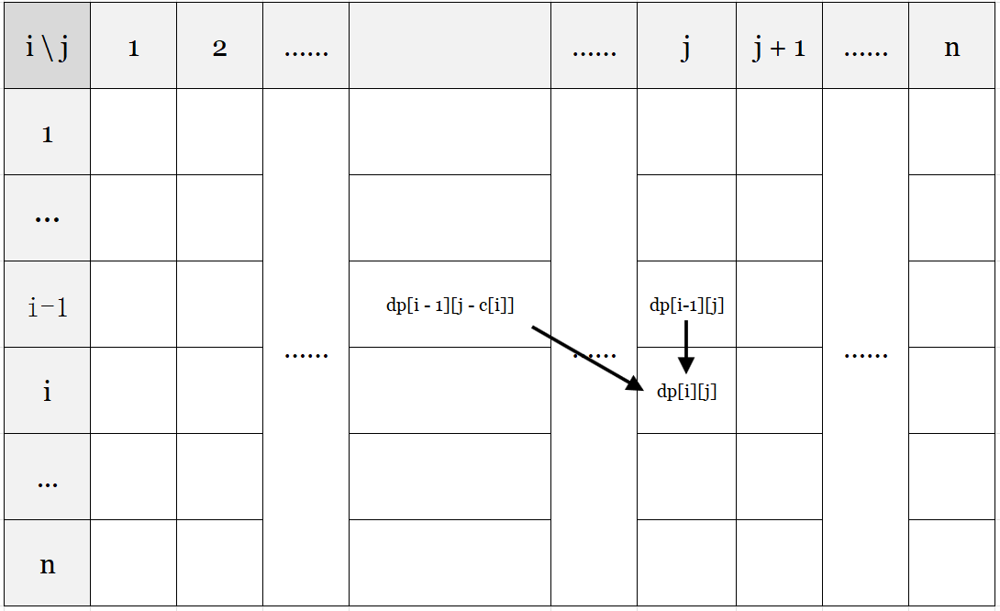

背包
01 背包
题目简介：有
N个物品和一个容量为W的背包，每个物品价值为v[i]， 重量为c[i]。在选出若干个物品在满足容量不超过W时，求最大价值是多少？
这是最基础的背包问题，观察后发现每个物品要么选（1），要么不选（0），所以我们通常称这种题型为 01背包。
思路
我们可以定义一个状态：dp[i][j] 代表前 i 个物品选恰好重量为 j 时，可以获得的最大价值。那么决策显然为两个：选或不选。如果选择装入当前物品，那么我们需要让背包腾出至少 c[i] 个容量用于装这个物品，而价值则加上这个物品的价值，即 v[i]。如果不选择装入当前物品，那么就是同样的空间装前 i - 1 个物品。
我们可以画一个表格来直接的理解： 
通过整理和表格我们发现状态转移如下： $$ dp[i][j] = max\begin{cases} dp[i - 1][j] \newline dp[i - 1][j - c[i]] + v[i] \end{cases} $$
Code
下面是一个 01背包在转移时的代码：
for (int i = 1; i <= n; i++) {
for (int j = c[i]; j <= W; j++) {
dp[i][j] = max(dp[i - 1][j], dp[i - 1][j - c[i]] + v[i])
}
}
复杂度
这样的时间复杂度是 \(O(NW)\)，空间复杂度为 \(O(NW)\)。
滚动数组
01 背包的时间复杂度是不可优化的了，而空间复杂度可以优化为 \(O(W)\) ，这个时候我们就需要使用滚动数组了。
观察
通过观察发现 dp[i][j] 只可能是从上一行而且不超过这一列转移过来。具体来说 dp[i][j] 只可能是从 dp[u][v] 转移过来且 \(1 \le u \le i - 1, \ 1 \le v \le j\) 。所以我们可以把 N 行压成 1 行，但是我们需要倒序来保证不把之前的覆盖。
Code
下面是一个使用了滚动数组的 01背包：
for (int i = 1; i <= n; i++) {
for (int j = W; j >= c[i]; j--) {
dp[j] = max(dp[j], dp[j - c[i]] + v[i]);
}
}
复杂度
时间复杂度无法进行优化，即 \(O(NW)\) ，空间复杂度为 \(O(W)\)
总结
01 背包是一个只有两个决策（选或不选）的背包。
状态转移：扣除花费获得价值。
完全背包
题目简介：有
N种物品和一个容量为W的背包， 每种物品可以拿任意个，每个物品价值为v[i]， 重量为c[i]。在选出若干个物品在满足容量不超过W时，求最大价值是多少？
观察上面题目发现跟 01 背包有些区别，这次变成了有 N 种，然后每种可以去任意个数。这种没有数量限制的题目我们统称为完全背包。
思路
我们发现完全背包非常类似 01 背包。而不同的是，01 背包的决策是要或者不要，但是完全背包的决策是要 0 个， 要 1 个， \(\cdots\) 要 \(\lfloor \frac{W}{c[i]} \rfloor\) 个。具体来说就是要 k 个且 \(0 \le k \le \lfloor \frac{W}{c[i]} \rfloor\) 。我们定义 dp[i][j] 代表前 i 个物品选恰好重量为 j 时，可以获得的最大价值。然后就可以退出转移方程：
Code
下面为完全背包的转移时的代码
for (int i = 1; i <= n; i++) {
for (int j = 0; j <= W; j++) {
dp[i][j] = dp[i - 1][j];
for (int k = 0; k <= W / c[i]) {
dp[i][j] = max(dp[i][j], dp[i][j - k * c[i]] + k * v[i]);
}
}
}
复杂度
时间复杂度为 \(O(NW \sum_{}{}{\frac{W}{c[i]}})\)，是比较大的。空间复杂度为 \(O(NW)\)
优化 \(O(NW \sum{}{}{\frac{W}{c[i]}}) \to O(NW)\)
思路
01 背包滚动数组后需要倒序是为了保证 dp[i] 是从状态 dp[i - 1][j - c[i]] 转移而来，而完全背包是可以从自己这一行转移过来，所以 for 循环需要顺序写来保证可以从 dp[i][j - k * c[i]] 转移而来。
Code
下面是滚动数组后的完全背包：
for (int i = 1; i <= n; i++) {
for (int j = 0; j <= W; j++) {
dp[j] = max(dp[j], dp[j - c[i]] + v[i]);
}
}